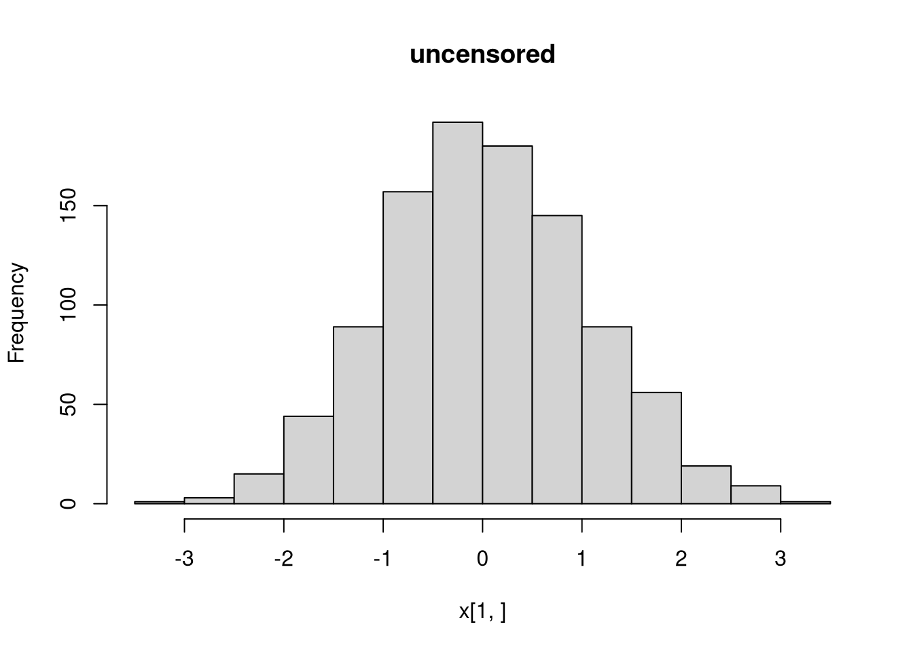
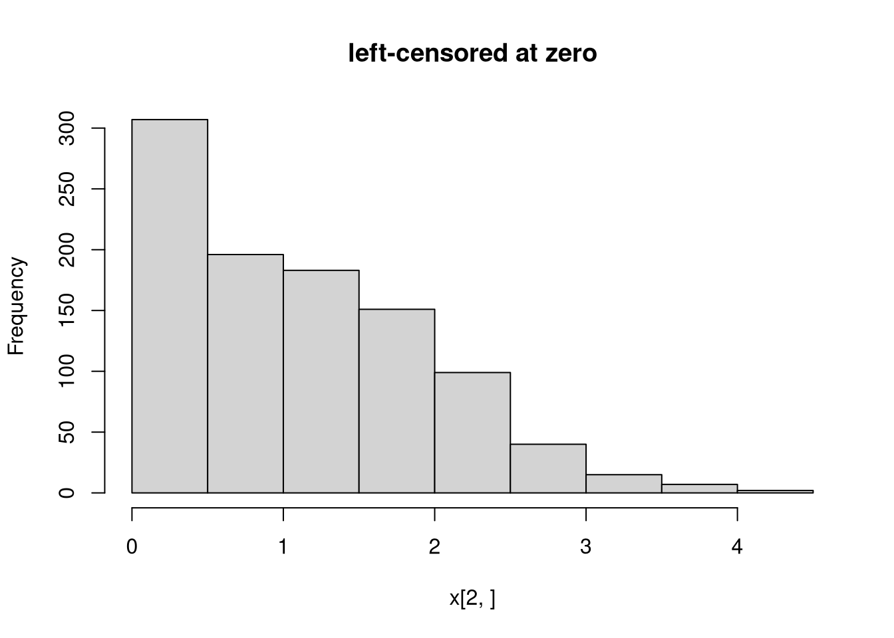
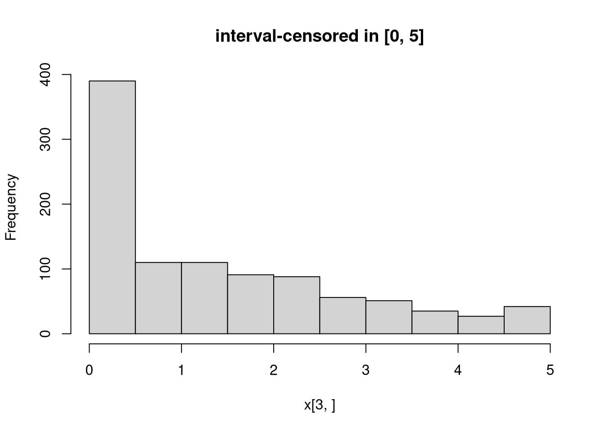

library("crch")
## package and random seed
library("distributions3")
set.seed(6020)
## three censored normal distributions:
## - uncensored standard normal
## - left-censored at zero (Tobit) with latent mu = 1 and sigma = 1
## - interval-censored in [0, 5] with latent mu = 1 and sigma = 2
X <- CensoredNormal(
mu = c( 0, 1, 1),
sigma = c( 1, 1, 2),
left = c(-Inf, 0, 0),
right = c( Inf, Inf, 5)
)
X[1] "CensoredNormal(mu = 0, sigma = 1, left = -Inf, right = Inf)"
[2] "CensoredNormal(mu = 1, sigma = 1, left = 0, right = Inf)"
[3] "CensoredNormal(mu = 1, sigma = 2, left = 0, right = 5)"## compute mean and variance of the censored distribution
mean(X)[1] 0.000000 1.083315 1.378612variance(X)[1] 1.0000000 0.7510878 2.0679838## higher moments (skewness, kurtosis) are not implemented yet
## support interval (minimum and maximum)
support(X) min max
[1,] -Inf Inf
[2,] 0 Inf
[3,] 0 5## simulate random variables
random(X, 5) r_1 r_2 r_3 r_4 r_5
[1,] -0.3421647 -0.6121245 -1.7461032 0.3600695 0.9275691
[2,] 1.4528670 0.0000000 0.1263061 2.5174300 1.0124322
[3,] 2.2338249 0.1466394 3.1254139 0.0000000 0.0000000## histograms of 1,000 simulated observations
x <- random(X, 1000)
hist(x[1, ], main = "uncensored")
hist(x[2, ], main = "left-censored at zero")
hist(x[3, ], main = "interval-censored in [0, 5]")
[1] 0.3989423 0.1586553 0.1994711pdf(X, x, log = TRUE)[1] -0.9189385 -1.8410216 -1.6120857log_pdf(X, x)[1] -0.9189385 -1.8410216 -1.6120857## cumulative distribution function (CDF)
cdf(X, x)[1] 0.5000000 0.1586553 0.5000000## quantiles
quantile(X, 0.5)[1] 0 1 1[1] 0.5 0.5 0.5[1] 1 1 1## all methods above can either be applied elementwise or for
## all combinations of X and x, if length(X) = length(x),
## also the result can be assured to be a matrix via drop = FALSE
p <- c(0.05, 0.5, 0.95)
quantile(X, p, elementwise = FALSE) q_0.05 q_0.5 q_0.95
[1,] -1.644854 0 1.644854
[2,] 0.000000 1 2.644854
[3,] 0.000000 1 4.289707quantile(X, p, elementwise = TRUE)[1] -1.644854 1.000000 4.289707quantile(X, p, elementwise = TRUE, drop = FALSE) quantile
[1,] -1.644854
[2,] 1.000000
[3,] 4.289707## compare theoretical and empirical mean from 1,000 simulated observations
cbind(
"theoretical" = mean(X),
"empirical" = rowMeans(random(X, 1000))
) theoretical empirical
[1,] 0.000000 0.01580424
[2,] 1.083315 1.12030540
[3,] 1.378612 1.38062119## evaluate continuous ranked probability score (CRPS) using scoringRules
library("scoringRules")
crps(X, x)[1] 0.2336950 0.5952063 0.3984091